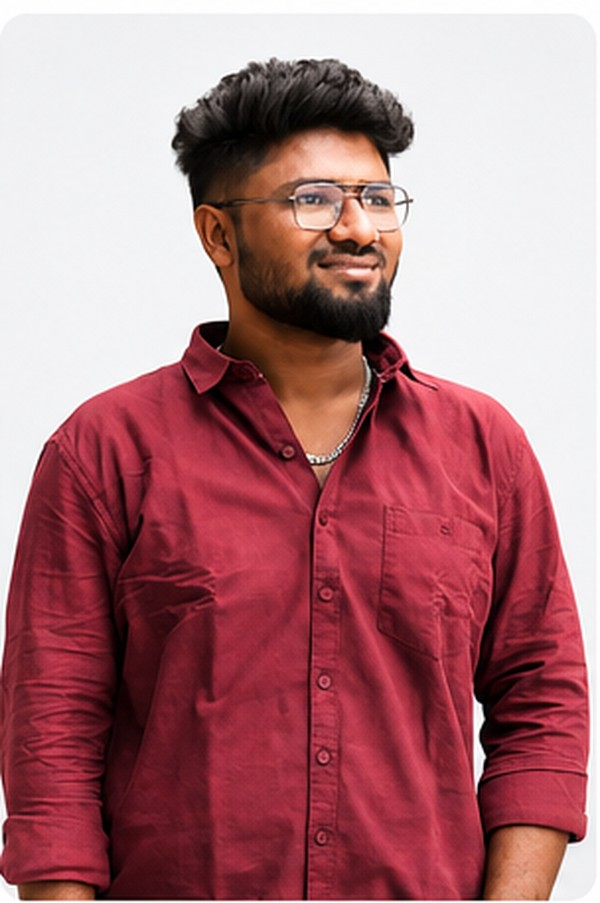
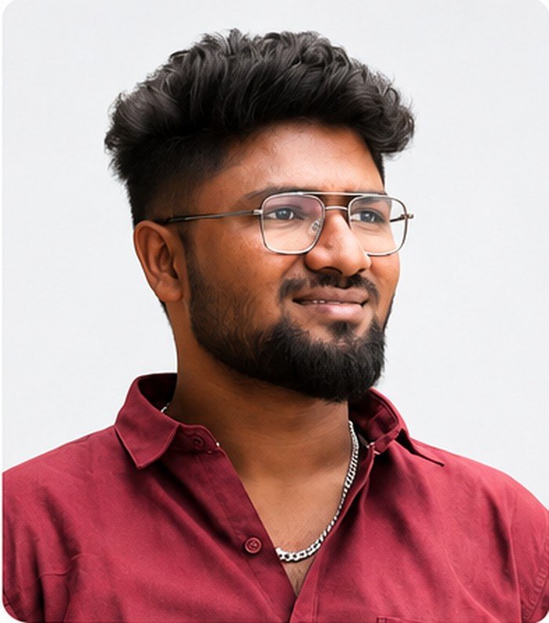

B.Sc. Data Science graduate who's happiest when a messy spreadsheet turns into a dashboard someone actually acts on. Currently a Data Analyst Intern at Bluestock Fintech, working with Python, SQL and Power BI.


After earning my B.Sc. in Data Science from The American College, Madurai (2026), I've been applying analytical thinking to real problems — from a mutual fund analytics capstone at my internship to classroom projects on student productivity and mobile recommendations.
I enjoy the moment a raw CSV turns into a chart someone can actually act on. My toolkit centres on Python (Pandas, NumPy, Scikit-learn), SQL, Power BI and Excel — and I'm always looking for the next dataset worth digging into.
Outside of dashboards, I'm drawn to building things of my own — I keep half an eye on entrepreneurship while I grow as an analyst.
The tools I reach for most, from cleaning raw data to shipping a dashboard.
Pandas & NumPy for wrangling, Scikit-learn for basic modelling and classification.
Querying, joins and aggregations to pull the numbers that answer a real question.
Building interactive dashboards that turn raw tables into a story stakeholders can read.
Pivot tables, formulas and quick-turnaround analysis for day-to-day questions.
Choosing the chart that fits the question, not the one that just looks nice.
Version control for scripts and notebooks as projects grow past a single file.
A few projects from my internship and coursework — more landing on GitHub as I build.
My internship capstone at Bluestock Fintech — a platform for analysing mutual fund data across ten separate datasets. Cleaned and structured the raw CSVs in Python, modelled the data in SQLite, and built out Power BI visuals to make fund performance easy to compare at a glance.
A B.Sc. Data Science project exploring how everyday habits — study time, sleep, screen time — relate to student productivity, using a classification model to group students into productivity patterns.
A recommendation system that suggests mobile phones to users based on their preferences and budget, built as part of coursework to explore recommendation logic end to end.
I'm actively building out new projects — check back soon or reach out for the latest.
My resume covers education, internship experience and project details in one page.
Open to data analyst roles and internships — happy to walk through any project above in more detail.
Based in Madurai, Tamil Nadu — open to remote and on-site opportunities across India. The fastest way to reach me is email; I usually reply within a day.
// Update the placeholders above with your real email, LinkedIn and GitHub links before publishing.